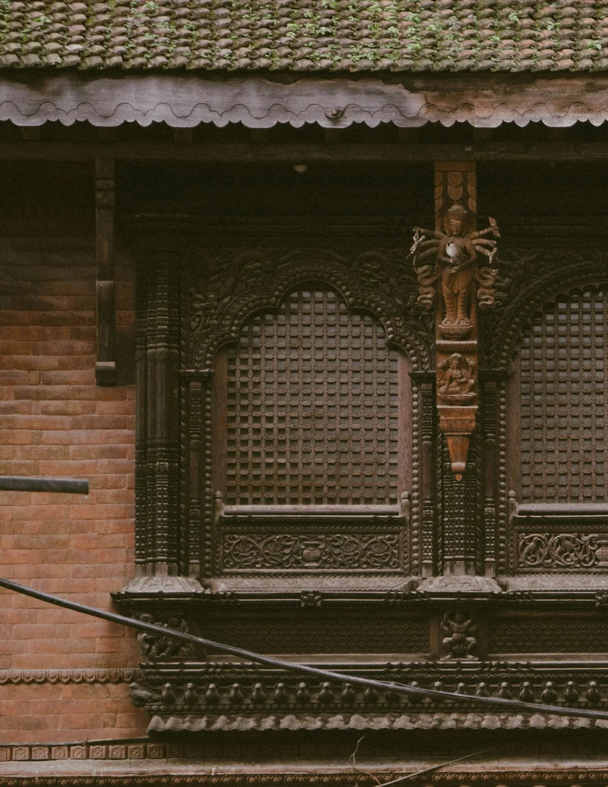
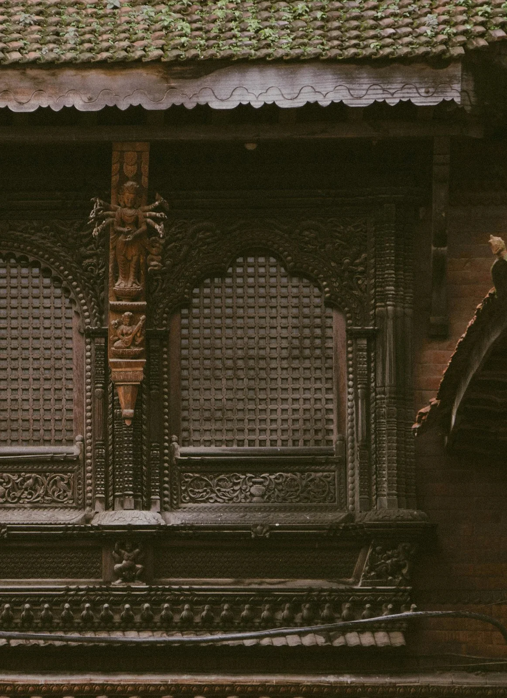

Courtyard Room
Rs 8,500 per night
24 m², double or twin. Timber ceiling and a window onto the courtyard.
- Hot shower and heated blankets
- Tea tray and filtered water


A restored Newari house in Patan. Eleven rooms around one brick courtyard.
Every window on the street is original. We repaired them, kept them, and built the rooms behind them.
The house took three years to restore, working with local carvers and bricklayers. Nothing was copied from a catalogue. Where a bracket was missing, a carver made one to match its neighbour.
Today it is a small hotel with eleven rooms, a courtyard kitchen, and a roof that faces the mountains.
Small, quiet and warm. Breakfast is included in every rate.
Rs 8,500 per night
24 m², double or twin. Timber ceiling and a window onto the courtyard.
Rs 10,500 per night
28 m², king bed. East light in the morning and a window seat for reading.
Rs 16,000 per night
42 m² with a sitting room and a private roof terrace facing the Himalaya.
A small kitchen cooking from the courtyard, with what the market has that morning.
Two hours at a Patan workshop, shaping a small bowl on the wheel. Rs 2,500 per person.
Add to my stayA 90-minute walk to find the best carved doors in the old city. Rs 1,500 per person.
Add to my stayLight the courtyard’s brass lamps with our caretaker at dusk. Free for guests.
Add to my stayVisit the workshop that repaired our windows and see a bracket take shape. Rs 1,200.
Add to my stayDown a side street, five minutes on foot from Patan Durbar Square.
Yes, with every room. Dinner is booked separately and needs notice by noon.
Free cancellation up to 7 days before arrival. After that we keep the first night.
We can meet you at the airport or bus park, and book taxis to Kathmandu or Bhaktapur.
Yes, but the stairs are steep and the courtyard has an open well. Families should ask for a ground-floor room.
Tell us when you’re coming. We reply within a day with availability and a price.